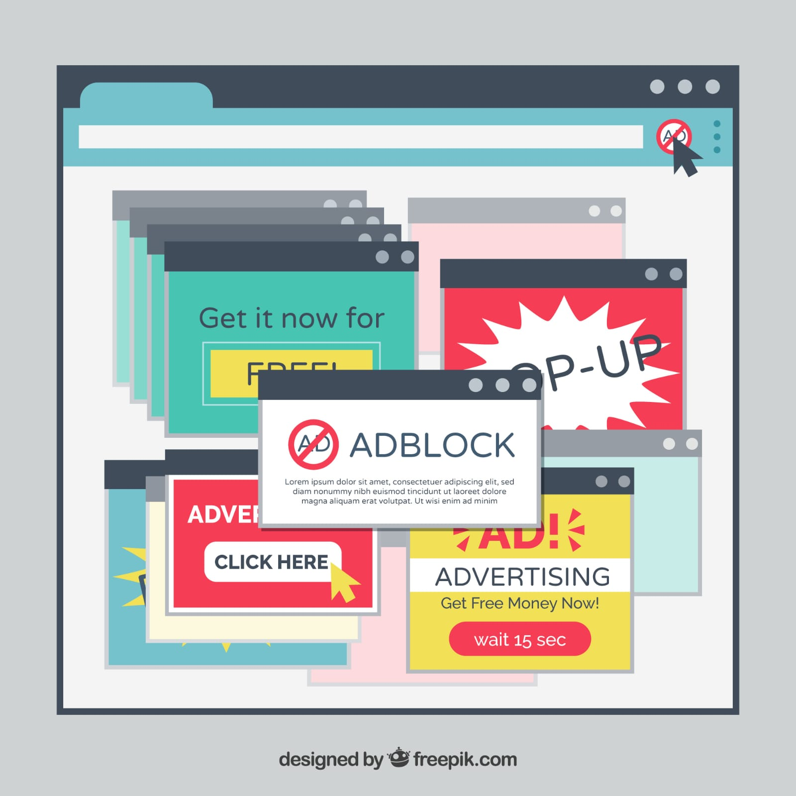

Navegadores de internet
conoce los problemas mas comunes
Ver problemas y soluciones
Problemas Comunes
- Páginas que no cargan
- Publicidad invasiva
Soluciones
- Limpiar el cahet
- Revisar extensiones